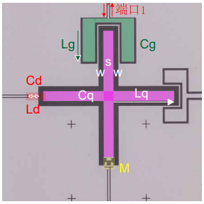

12. 控制线耦合强度¶

x-control 驱动强度为
\[
2g_d=\frac{C_dV_d}{C_q+C_d}\sqrt{\frac{1}{2\hbar Z_q}}
\]
其中， \(C_d\) 是微波驱动电容， \(V_d\) 是输入到芯片上的电压， \(Z_q\) 是比特的特征阻抗
\[
Z_q=\frac{1}{\omega_qC_q}
\]
\(C_q\) 的计算参考 Sec.1 中的单位长度电容 \((1.2)\) ，长度按 \(4l_q\) 计算
\[
C_q=4l_qC_0=8l_q\epsilon_0 (\epsilon^{sub}_r+1) \frac{K(k)}{K(\sqrt{1-k^2})}
\]
利用上式以及非谐性 \(\alpha=-E_C/\hbar=-e^2/(2C_q)/\hbar\) 可以计算出 bit 臂长
! 驱动强度一般 \(g_d/2\pi>50MHz\) ，可以在 10ns 内完成单次激发。（??? from wang th p40，未找到操作时间与 \(g_d\) 的关系）
e.g. 计算驱动强度
取输出电压 0.4V ，线上衰减 -60dB ，驱动电容 50fF。
import numpy
# 利用非谐性计算 bit 电容
def fun_cq(alph0):
alph=alph0*PI2*mhz
cq=-E**2/HBAR/alph/2
return cq/fm # fF
# 利用 bit 频率以及 cq 计算臂长
def fun_lq(epsub,s0,w0,wq0,cq0):
cq=cq0*fm
s=s0*um # um
w=w0*um
k=s/(s+2*w)
lq=cq*scipy.special.ellipk(numpy.sqrt(1-k**2))/scipy.special.ellipk(k)/(8*EP0*(epsub+1))
return lq/um
# 计算驱动强度
def fun_g_drive(omeq0,cq0,cd0,vdstart,db):
omeq=omeq0*PI2*ghz
cq=cq0*fm
cd=cd0*fm
vd=vdstart*10**(db/10) # 计算衰减后的电压强度
zq=1/omeq/cq
gd=cd*vd/(cq+cd)/numpy.sqrt(2*HBAR*zq)/2
return gd/PI2/mhz
print(fun_cq(-230))
print(fun_lq(11.9,10,6,5.5,84))
print(fun_g_drive(5.5,84,50,0.4,-60))
83.98971434530235
128.30108068130002
44.062910147476735